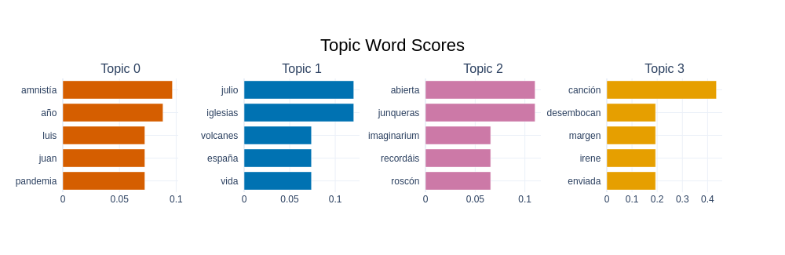

Vamos ya con la última entrada del cachitos de este año. Están de moda los LLM’s y demás, por el momento no estoy pagando ChatGpt ni ningún otro, quizá lo haga en el futuro para ir probando cosas. Lo que si puedo hacer es utilizar modelos libres.
Transformers
Voy a probar a hacer topic modelling usando BERTopic en python. BERTopic que utiliza cosas como reducción de dimensionalidad con embeddings, hdbscan y los conocidos transformers
Para eso, he instalado lo necesario en un entorno de miniconda. El script en python es este
Show the code
import osos.environ["TOKENIZERS_PARALLELISM"] ="false"from bertopic import BERTopicfrom bertopic.vectorizers import ClassTfidfTransformerimport pandas as pdfrom matplotlib import pyplot as pltimport plotly.express as pxfrom sklearn.feature_extraction.text import CountVectorizerfrom spacy.lang.es.stop_words import STOP_WORDSpd.set_option('display.max_columns', None)pd.set_option('display.max_colwidth', None)
Con BERT se hace embedding de los documentos,luego reducción de la dimensionalidad, clustering utilizando las dimensiones obtenidas y por último un modelo de topic modeling usando LDA con métrica c-tfidf.
Para este ejemplo concreto todo esto es lo que se suele llamar sobreingeinería pero puede ser útil en análisis de texto mucho más largos y complejos.
Ajustamos el modelo con BERT, dónde por un lado quitamos stopwords y elegimos un modelo de embedding multilingüe .
Y no consigo ver este plotly correctamente. Otros plotly desde python si me deja.
Show the code
import plotly.express as pxfig = topic_model.visualize_barchart(top_n_topics=20)##fig.show() # el show no me funciona
topic1
Ahora solo con los rótulos polémicos, los cuales identificamos en el post anterior.
Show the code
## solo polémicosmodel_polem = BERTopic(verbose=True, vectorizer_model = vectorizer_model, embedding_model='paraphrase-multilingual-MiniLM-L12-v2', min_topic_size=2)topicos_polem, _ = model_polem.fit_transform(polemicos.texto)#> 2024-03-02 10:41:11,263 - BERTopic - Embedding - Transforming documents to embeddings.#> Batches: 0%||0/2 [00:00<?, ?it/s]Batches: 50%|##### | 1/2 [00:08<00:08, 8.68s/it]Batches: 100%|##########| 2/2 [00:16<00:00, 8.37s/it]Batches: 100%|##########| 2/2 [00:16<00:00, 8.42s/it]#> 2024-03-02 10:41:32,972 - BERTopic - Embedding - Completed ✓#> 2024-03-02 10:41:32,972 - BERTopic - Dimensionality - Fitting the dimensionality reduction algorithm#> 2024-03-02 10:41:48,585 - BERTopic - Dimensionality - Completed ✓#> 2024-03-02 10:41:48,585 - BERTopic - Cluster - Start clustering the reduced embeddings#> 2024-03-02 10:41:48,599 - BERTopic - Cluster - Completed ✓#> 2024-03-02 10:41:48,604 - BERTopic - Representation - Extracting topics from clusters using representation models.#> 2024-03-02 10:41:48,628 - BERTopic - Representation - Completed ✓freq = model_polem.get_topic_info()print("Number of topics: {}".format( len(freq)))#> Number of topics: 5freq.head()#> Topic Count Name \#> 0 -1 1 -1_red_programa_vigilantes_canal #> 1 0 13 0_amnistía_año_luis_juan #> 2 1 11 1_julio_iglesias_vida_españa #> 3 2 9 2_abierta_junqueras_imaginarium_recordáis #> 4 3 3 3_canción_desembocan_margen_irene #> #> Representation \#> 0 [red, programa, vigilantes, canal, montero, iglesias, , , , ] #> 1 [amnistía, año, luis, juan, pandemia, resultado, guerra, ley, izquierda, propuesta] #> 2 [julio, iglesias, vida, españa, volcanes, pantera, vicente, viviendo, victor, planchar] #> 3 [abierta, junqueras, imaginarium, recordáis, roscón, respetos, sabéis, rompedora, sobrevivir, rufián] #> 4 [canción, desembocan, margen, irene, enviada, definitiva, currículum, abascal, nervión, niños] #> #> Representative_Docs #> 0 [este programa era como canal red con iglesias y montero siempre vigilantes] #> 1 [ojalá todas las guerras que hemos vivido este año se llamaran juan luis, ste tema se escribió con cartas de mujeres con cáncer de mama si te ha tocado este año lo de la amnistía igual lo relativizas, en este año de crispación política la propuesta no de ley sobre alud mental logró 340 votos aún así seguimos sin una ley naciona] #> 2 [julio iglesias la vida sigue igual fin de año 1969, alvaro benito jugaba en el real madrid se lesionó y se dedicó a la música como julio iglesias pero no, ana belén conoció a victor manuel al mismo tiempo que a julio iglesias ésta se la cantó a julio] #> 3 [una mezcla entre un maniquí de una tienda de segunda mano y puigdemont después de sobrevivir a una pelea con junqueras, el rey de la copla callejera vestía como un agente de tecnocaso y cobía por la puerta chica del imaginarium, la última gran diva una manchega moderna abierta y rompedora en las antípodas de garcia page] #> 4 [los niños protagonistas de esta canción ya tienen mejor currículum que santiago abascal, la canción habla de la margen izquierda del nervión el rio en el que desembocan los cinco océanos, ha sido la canción más enviada entre pp y psoe estos años aunque la versión definitiva ha sido para irene montero]
Show the code
fig_polem = model_polem.visualize_barchart(top_n_topics=20)# fig_polem.show() no funciona incrusto el html con el plotly

topci2
Para ver los rótulos del topic 0
Show the code
df = pd.DataFrame({'topic': topicos_polem, 'document': polemicos.texto})df.loc[df.topic ==0, 'document']#> 0 ste tema se escribió con cartas de mujeres con cáncer de mama si te ha tocado este año lo de la amnistía igual lo relativizas#> 2 el de la izquierda del todo ya no está en la coalición para algunos el chunguito verdadero#> 3 la de la izquierda hizo lo que todo padre sueña al mirar su whatsapp abandonar el grupo#> 6 la versión que habla de la relación de feijóo con el último resultado electoral se titula nosentera#> 7 a henry como a los ultras de las protestas contra la amnistía le gusta estar cara al sol#> 8 juan luis guerra 4 40 visa para un sueño pero esto qué es esto es lo que hay 1990#> 9 ojalá todas las guerras que hemos vivido este año se llamaran juan luis#> 12 la pandemia creímos que formaban el dúo más estomagante gonzález y guerra han vuelto para recordarnos que no#> 13 el pp usó verano azul para su campaña el plan b era fariña o crematorio pero el resultado fue poco yo#> 15 en este año de crispación política la propuesta no de ley sobre alud mental logró 340 votos aún así seguimos sin una ley naciona#> 20 si puigdemont la hubiera pedido así la amnistía no sería tan impopular#> 23 has sido tú resume el discurso de la oposición desde que llegó pedro sánchez hasta hoy#> 31 a compusieron en pandemia pensando que igual todo acababa no tendríamos que escucharla en bucle durante tres años#> Name: document, dtype: object
Y vemos que BERtopic es una buena herramienta para este tipo de cosas, y que seguramente en análisis de texto más complejos sea muy útil.